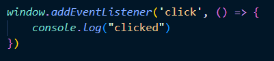

Intro to Async Javascript
Callback Functions
Callbacks put simply are functions that are called in another functions parameters. for example an eventListener. an eventListener has two parameters the first is a string desribing the kind of event to listen out for, and the second parameter is the callback funtion with the code to be exicuted once that event is (we'll say) heard since its "listening" for the event lol.

In the example above, you can visualize the callback function in the event eventListener. this is the begening to asynchronous Javascript because that callback function can be called anytime that event is triggered and does not follow the flow of the rest of the code.
Now whats the problem with callback functions for asynchronous programing? Well it has its uses like we see in that eventListener example but its just not enough. bucause theres times when we need more complex Asynchronous opperations and with just callbacks we risk callback hell!
What is callback hell? Why don't I show you.